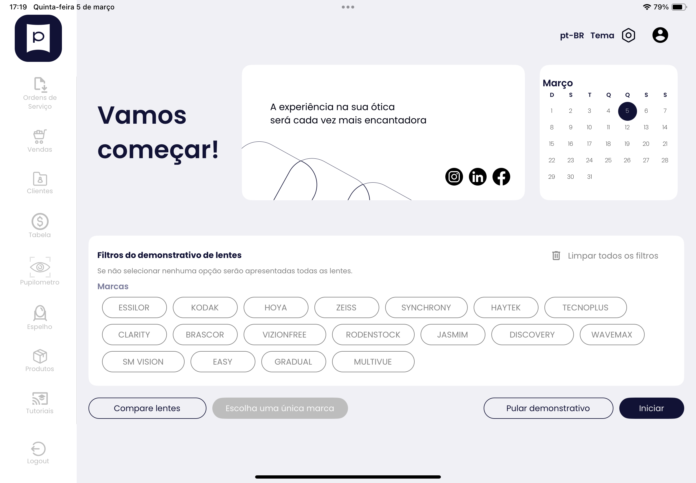

Quando seu cliente percebe a diferença,
ele escolhe o melhor
e não apenas o mais barato.
O demonstrativo de lentes Pupilens transforma explicação em percepção visual, aumenta o valor percebido e fortalece o fechamento das lentes premium.
Enquanto seu cliente visualiza a diferença entre os tratamentos e entende o valor das lentes premium, você profissionaliza seu atendimento com um demonstrativo inteligente criado exclusivamente para óticas.
SOLICITAR DEMONSTRAÇÃO
Veja como aumentar seu ticket médio com um atendimento mais visual e estratégico.

📸 Imagem: App Pupilens em tablet mostrando catálogo de lentes
Adicione sua imagem aqui (1920x1080px recomendado)